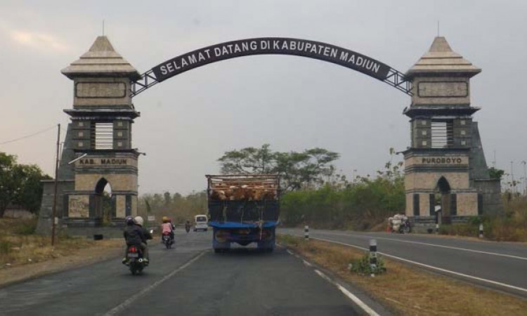

Sejarah Kabupaten Madiun
Kabupaten Madiun ditinjau dari pemerintahan yang sah, berdiri pada tanggal paro terang, bulan Muharam, tahun 1568 Masehi tepatnya jatuh hari Kamis Kliwon tanggal 18 Juli 1568 / Jumat Legi tanggal 15 Suro 1487 Be – Jawa Islam. Berawal pada masa Kesultanan Demak, yang ditandai dengan perkawinan putra mahkota Demak Pangeran Surya Patiunus dengan Raden Ayu Retno Lembah putri dari Pangeran Adipati Gugur yang berkuasa di Ngurawan, Dolopo.
Pusat pemerintahan dipindahkan dari Ngurawan ke desa Sogaten dengan nama baru Purabaya (sekarang Madiun). Pangeran Surya Patiunus menduduki kesultanan hingga tahun 1521 dan diteruskan oleh Kyai Rekso Gati. (Sogaten = tempat Rekso Gati) Pangeran Timoer dilantik menjadi Bupati di Purabaya tanggal 18 Juli 1568 berpusat di desa Sogaten. Sejak saat itu secara yuridis formal Kabupaten Purabaya menjadi suatu wilayah pemerintahan di bawah seorang Bupati dan berakhirlah pemerintahan pengawasan di Purabaya yang dipegang oleh Kyai Rekso Gati atas nama Demak dari tahun 1518 – 1568
Pada tahun 1575 pusat pemerintahan dipindahkan dari desa Sogaten ke desa Wonorejo atau Kuncen, Kota Madiun sampai tahun 1590. Pada tahun 1686, kekuasaan pemerintahan Kabupaten Purabaya diserahkan oleh Bupati Pangeran Timur (Panembahan Rangga Jumena) kepada putrinya Raden Ayu Retno Dumilah. Bupati inilah selaku senopati manggalaning perang yang memimpin prajurit-prajurit Mancanegara Timur. Pada tahun 1586 dan 1587 Mataram melakukan penyerangan ke Purbaya dengan Mataram menderita kekalahan berat.
Pusaka Tundung Madiun berhasil direbut oleh Sutawidjaja dan melalui bujuk rayunya, Raden Ayu Retno Djumilah dipersunting oleh Sutawidjaja dan diboyong ke istana Mataram di Plered (Jogjakarta) sebagai peringatan penguasaan Mataram atas Purbaya tersebut maka pada hari Jumat Legi tanggal 16 Nopember 1590 Masehi nama “Purbaya” diganti menjadi “Madiun”.